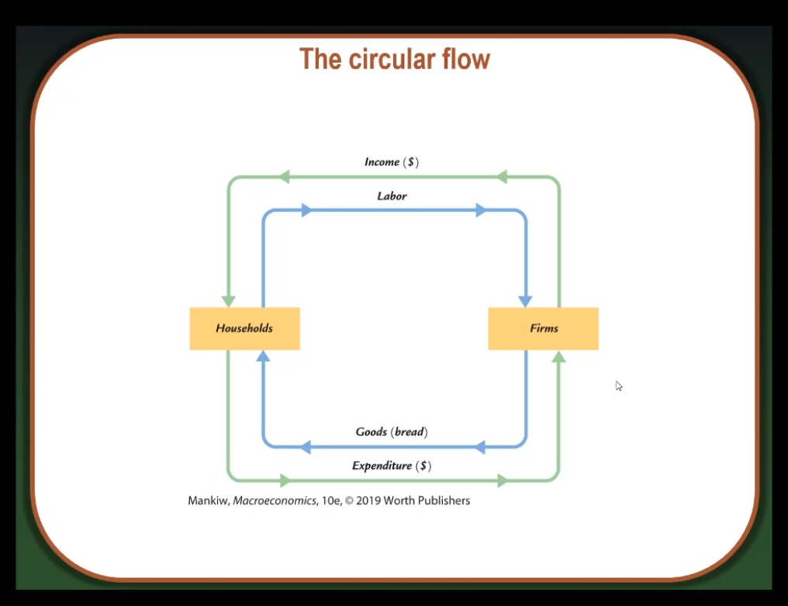

Measuring GDP
Two definitions:
- Total expenditures on domestically produced final goods and services
- Total income earned by domestically located factors of productionExpenditure equals income because every dollar a buyer spends becomes income to the seller
Value added is the value of output minus the value of the intermediate goods used to produce that output
GDP = value of final goods produced = sum of value added at all stages of production
The value of the final goods already includes the value of the intermediate goods, so including intermediate and final goods in GDP would be double counting

Expenditure Components of GDP
- Consumption, _C_
- Investment, _I_
- Government Spending, _G_
- Net exports, _NX_
Equation:
$Y = C + 1 + G + NX$Consumption
- Definition: The value of all goods and services bought by households including:
- Durable goods
- Nondurable goods
- ServicesInvestment and Capital
- Investment is spending on new capital
- This is different from financial investment which is refered to as savings in this classGovernment Spending (G)
- G includes all government spending on goods and services
- G excludes transfer payments
(e.g., unemployment insurance payments) as they do not represent spending on goods and servicesNet Exports (NX)
- NX = exports - imports
- Exports: The value of goods and services sold to other countries
- Imports: The value of goods and services purchased from other countries
- NX equals net spending from abroad on goods and services